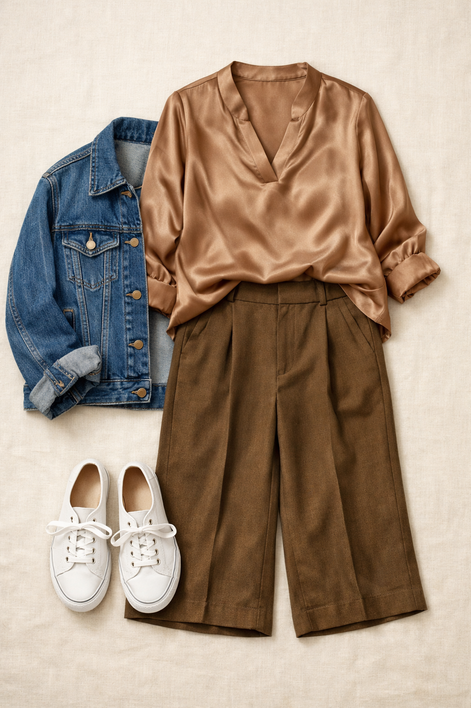
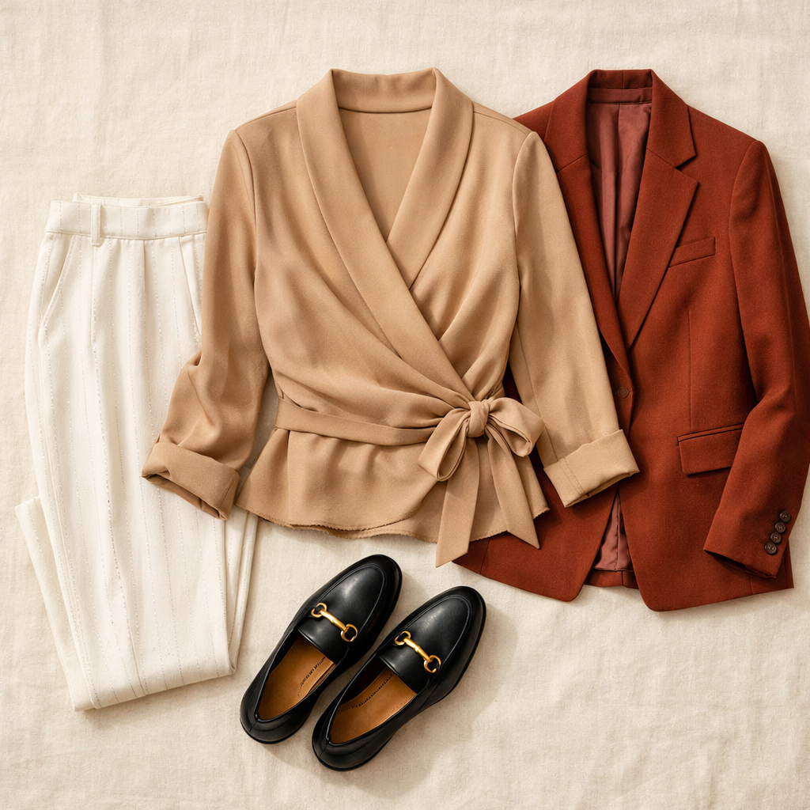
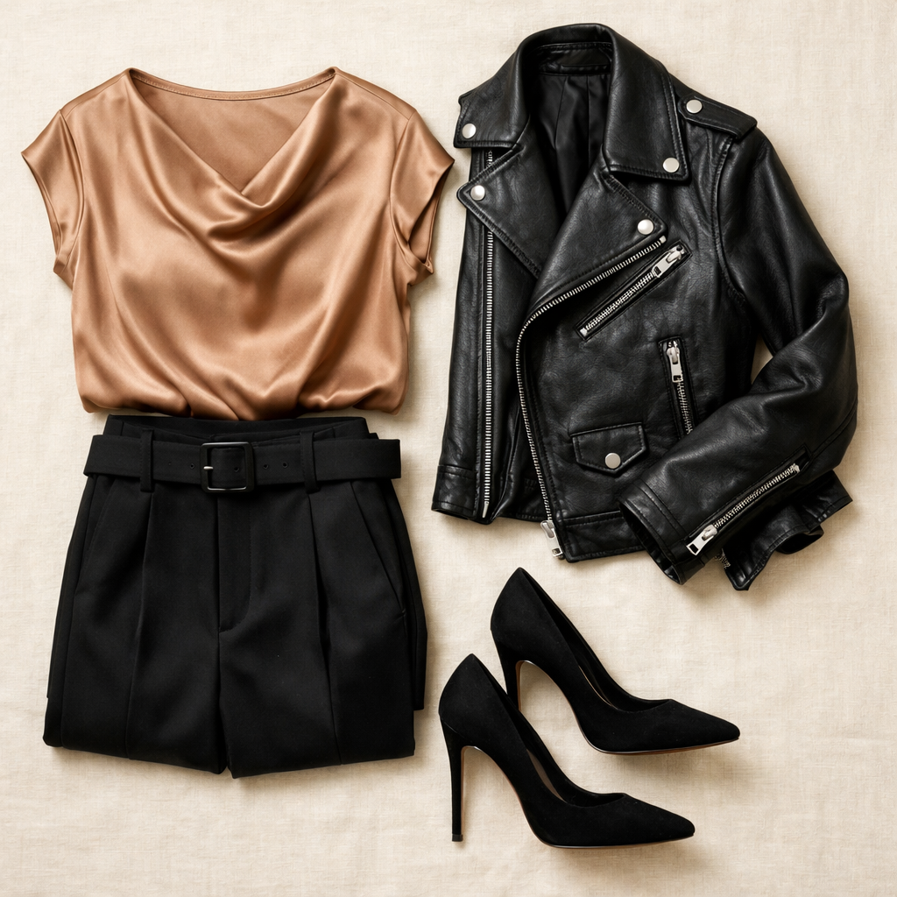

Vince Camuto
Rumple Satin Top — Rich Taupe
$59
Warm dusty caramel satin with a relaxed "rumple" silhouette — the kind of top that looks intentionally effortless. Machine washable satin is a genuine workhouse: pairs back to everything, travels without wrinkles, and the Rich Taupe colorway is a universal neutral that flatters every skin tone.
Shop NowWhy This Pick
Machine washable satin at $59 is the definition of a wardrobe workhorse. The Rich Taupe sits perfectly between caramel, beige, and warm brown — it's not quite any of them, which makes it endlessly versatile. Pairs with nearly every bottom in the capsule and beyond.
3 Ways to Wear It
Styled with pieces already in your closet

Look 1 — Relaxed Friday Chic
Mushroom Taupe BR wide-leg (Pick #1) + Denim trucker jacket (#211) + White Keds (#510). The taupe satin top elevates the khaki trousers while the denim jacket and white sneakers dial the energy back to Friday. Effortlessly chic without trying.

Look 2 — Monochrome Warm Neutrals
Dried Moss Jayne trouser (Pick #2) + Camel/tan turtleneck (#76) layered open + Tan booties (#504). Layer the camel turtleneck open over the satin top for maximum tonal effect. Warm neutrals stacked in a way that reads effortlessly expensive.

Look 3 — Black Foundation
Democracy Absolution black belted trouser + Black moto jacket (#213) + Black stiletto pumps (#518). Taupe satin against an all-black foundation is sophisticated and striking. The warm caramel creates a luminous contrast against the deep black — the satin sheen does all the work.